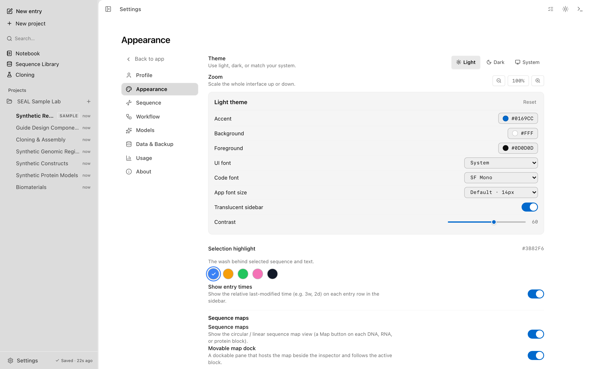
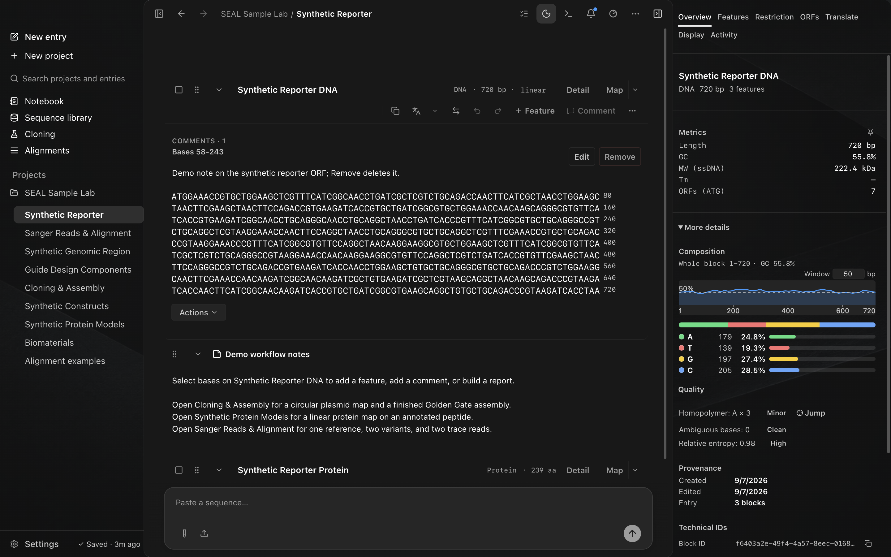
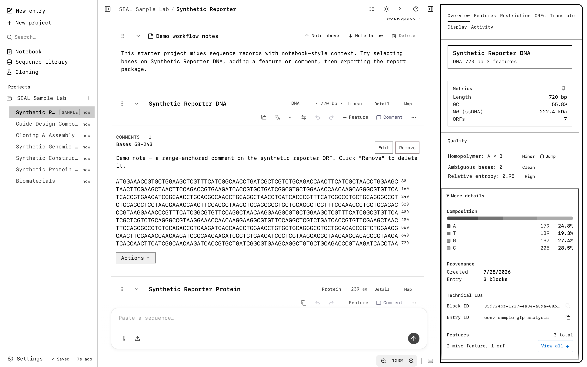

Settings and backup
This guide includes source and direct-edition features. Check the edition comparison for the first Store release. Screenshots and recordings show the direct edition. Compare editions.
Appearance, accessibility, and a portable settings backup. Open Settings from the sidebar; the controls below sit in the Appearance and Data and Backup panes.
Settings opens as a full pane with a category rail on the left: Profile, Appearance, Sequence, Workflow, Models, Data and Backup, Usage, and About. This page covers the Appearance and Data and Backup panes. Every appearance and accessibility choice persists locally and rides along in a settings backup.
Appearance
The Appearance pane sets the theme, accent, selection color, contrast, and translucency. Set the theme first.

Theme
Pick Light, Dark, or System. System follows your operating system's light or dark setting. The choice is saved to seal-theme so the app opens in the same theme next time.
Accent and selection
The Theme card holds the accent color and the editable theme colors. Accent options are None, Codex, Teal, Blue, Purple, Rose, Orange, and Yellow. The default is Codex. You can also set the Background, Foreground, UI font, and Code font; those edits define a custom theme on top of the active light or dark base.
The Selection highlight controls the wash drawn over selected bases: Blue, Amber, Green, Pink, or Charcoal. The default is Blue.
Contrast and translucency
The Contrast slider (0 to 100) tunes how strong the theme reads. Translucent sidebar toggles a glass sidebar, with a translucency amount when it is on.
High-contrast terminal theme
Turning on High contrast (see Accessibility, below) renders the app as a high-contrast terminal. On the dark theme this is the "Max Mono" appearance: a neutral pure-black background, a single bright-cyan accent, a monospace interface font, and square corners, with no blue tint in the chrome. On the light theme it becomes a black-on-white "paper terminal" with the same monospace, square-cornered treatment. The A, T, G, and C base colors stay as they are in both, because those colors carry data rather than chrome. While High contrast is on, the Contrast slider is fixed, since high contrast sets its own values.


Resetting appearance
The Appearance pane has its own Reset to defaults. Click once to arm it (the button reads "Confirm reset?"), then click again within a few seconds to apply. The reset is non-destructive: it changes display preferences only and keeps all of your data. It restores the theme to Light, the accent to Codex, the selection to Blue, and the contrast and sidebar translucency to their defaults; turns off High contrast, Monochrome, and the colorblind-safe palette; returns zoom and detail zoom to 100 percent; turns the translucent sidebar back on; and clears any custom theme and terminal styling.
Accessibility
The Accessibility controls live in the Appearance pane. Each is a toggle.
- Monochrome removes the accent and selection hues for a neutral interface.
- High contrast switches to the high-contrast terminal appearance described above.
- Color amino acids swaps the amino-acid colors for the Wong (2011) colorblind-safe set.
Wong colorblind-safe amino-acid palette
The Color amino acids toggle replaces the five amino-acid chemistry-class colors with the Wong (2011) colorblind-safe palette, chosen to stay distinguishable under the common types of color vision deficiency.
| Chemistry class | Default | Wong palette |
|---|---|---|
| Hydrophobic | #f59e0b | #e69f00 |
| Polar | #22c55e | #009e73 |
| Positive | #3b82f6 | #0072b2 |
| Negative | #f43f5e | #d55e00 |
| Special | #9ca3af | #cc79a7 |
The toggle also retunes the Chou-Fasman secondary-structure bars and the coil color to matching Wong hues, so protein-track structure bars stay readable. It affects amino-acid tracks, the protein inspector, the Chou-Fasman bars, and amino-acid feature pills. It does not change DNA base colors; those follow the light or dark theme. For colorblind-safe DNA bases, use High contrast.
Appearance toggles announce their state to a screen reader through a polite live region, and each swatch row is a radio group with arrow-key navigation.
Settings backup
The Data and Backup pane exports your settings to a single JSON file and imports one back. Use it to move a customized install to another machine. The backup carries your appearance and accessibility choices along with your customization libraries (custom codon tables, colors, style presets, feature templates, primer presets) and your non-secret model endpoint flags. API keys and secrets are not included.
Export settings
Click Export settings. SEAL writes a file named seal-settings-YYYY-MM-DD.json. The file is a portable backup at version 5 (SETTINGS_VERSION 5): a small envelope with a version, an exportedAt timestamp, and a settings object.
{
"version": 5,
"exportedAt": "2026-06-20T12:00:00.000Z",
"settings": {
"theme": "dark",
"accentColor": "codex",
"selectionHighlight": "blue",
"highContrast": false,
"monochrome": false,
"colorblindAaPalette": false,
"contrast": 50,
"zoom": 1,
"...": "..."
}
}Import settings
Choose a settings file to import. The imported values apply to the live interface right away: the theme, accent, selection, palettes, and other preferences update in place, with no restart. SEAL validates the file first and reports a clear error if it cannot be applied:
- The file must be valid JSON with a
settingsobject. versionmust be an integer of 1 or higher.- A
versionnewer than 5 is rejected, since this build does not know how to read it.
Older backups import cleanly. Fields a newer build added are optional, so an older file that omits them leaves the current value in place rather than clearing it. A version 5 file also avoids dropping your customization libraries when read by a build that understands version 5.
A settings backup holds preferences and customization libraries, not your sequences. To move Entries, blocks, notebooks, features, Activity, and related records, use the workspace backup in the same pane. It writes a full .gcbak.json file that can be imported as a merge or an overwrite. Unsent composer drafts are not included.
Clear data
The Data and Backup pane has a Clear all data action. It is a two-step confirm: the first click arms it for five seconds, and the second click within that window runs the sweep. If you wait past five seconds, it disarms on its own.
The sweep clears every local store in one pass:
- The SQLite database, on the desktop build.
- The browser
IndexedDBstore. - Every
seal-andseal_key in local storage, which covers drafts, the last-active conversation, expanded folders, the theme, and the disclosure toggles, so nothing is left half-cleared.
Before clearing the active desktop database, SEAL creates and verifies a seal.db.pre-restore-*.backup recovery copy beside it, retains up to five such copies, and shows the new path. The active workspace, secure-key sidecar, IndexedDB fallback, and SEAL-prefixed local settings are then cleared. On desktop, restart when prompted. Browser fallback clears its local data in place.
Clear all data is destructive, but desktop recovery copies deliberately retain the prior SQLite contents. Export a portable workspace backup first. If you require complete erasure, also delete the displayed recovery copy and older adjacent recovery copies after closing SEAL. See Privacy for both local storage roots and the full removal procedure.